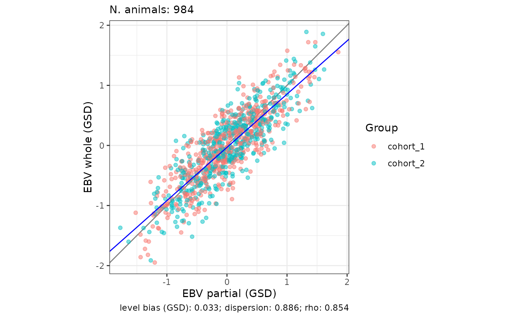

Computes the statistics of the LR method (Legarra and Reverter, 2018) by comparing EBVs from a "partial" evaluation with EBVs from a "whole" evaluation, for a group of validation animals (the "focal group"). Optionally, standard errors are estimated by bootstrapping over animals, and a scatter plot of the whole EBVs on the partial EBVs is returned.
Usage
validate_lr(
partial,
whole,
val_group = NULL,
var_a = NULL,
average_inbreeding = NULL,
inbreeding = NULL,
plot = FALSE,
plot_verbose = FALSE,
plot_subgroups = FALSE,
plot_in_gsd = FALSE,
bootstrap = FALSE,
n_boot = 10000L,
ncpus = 1L,
verbose = FALSE
)Arguments
- partial
A data frame with animal IDs in column 1 and EBVs from the partial evaluation in column 2. Other columns are ignored. A data.table or a tibble also works.
- whole
A data frame with animal IDs in column 1 and EBVs from the whole evaluation in column 2. Other columns are ignored. A data.table or a tibble also works.
- val_group
Optional data frame with the IDs of the validation animals in column 1 and, optionally, a group label in column 2 (used by
plot_subgroups). Every ID must be present in bothpartialandwhole. Defaults toNULL: all animals present in both are used.- var_a
Optional single positive number: the additive genetic variance. Needed for the level bias in genetic standard deviations, for the accuracy of the partial EBVs, and for
plot_in_gsd. Defaults toNULL.- average_inbreeding
Optional single number in [0, 1): the average inbreeding of the validation animals as a coefficient, not a percentage (
0.05, not5), used for the accuracy of the partial EBVs. Provide eitheraverage_inbreedingorinbreeding, not both. Defaults toNULL.- inbreeding
Optional data frame with animal IDs in column 1 and inbreeding coefficients (numbers of at least 0, as coefficients and not percentages) in column 2. It must include every validation animal; other animals are ignored. Use it instead of
average_inbreedingwhenbootstrap = TRUE, so that the average inbreeding is recomputed in every resample. Defaults toNULL.- plot
Logical. If
TRUE, also return a ggplot2 scatter plot of the whole EBVs on the partial EBVs. Defaults toFALSE.- plot_verbose
Logical. If
TRUE(andplot = TRUE), add the number of animals and the main statistics to the plot. The level bias is shown in genetic standard deviations whenplot_in_gsd = TRUE, and in the units of the EBVs otherwise. Defaults toFALSE.- plot_subgroups
Logical. If
TRUE(andplot = TRUE), colour the points by the group label in column 2 ofval_group, which helps to spot heterogeneous groups. Defaults toFALSE.- plot_in_gsd
Logical. If
TRUE(andplot = TRUE), both axes are divided by the genetic standard deviation,sqrt(var_a), so that the plot is in genetic standard deviations. It needsvar_a. Defaults toFALSE: the axes are in the units of the EBVs.- bootstrap
Logical. If
TRUE, standard errors are estimated by bootstrapping over animals with replacement. Defaults toFALSE.- n_boot
A single whole number of at least 2: the number of bootstrap resamples. Defaults to
10000.- ncpus
A single whole number of at least 1: the number of CPUs used for the bootstrap. Defaults to
1, which runs serially.- verbose
Logical. If
TRUE, report the number of validation animals and the bootstrap settings. Defaults toFALSE.
Value
A list with two elements, stats and plot.
stats is a data frame with one row per statistic and a column value.
With bootstrap = TRUE it also has a column SE, the bootstrap standard
error. It keeps the full precision and prints with a few significant digits
(see print.validatoR_stats()). The rows are, with p being the partial and
w the whole EBVs of the validation animals:
n: the number of validation animals.level_bias:mean(p) - mean(w). 0 means no level bias.level_bias_in_GSD:level_bias / sqrt(var_a). Only whenvar_ais provided.dispersion_bias:cov(p, w) / var(p), the regression ofwonp. 1 means no dispersion bias, values below 1 mean the partial EBVs are over-dispersed, and values above 1 mean they are under-dispersed.accuracy_partial:sqrt(cov(p, w) / ((1 - F) * var_a)), withFbeing the average inbreeding of the validation animals. Only whenvar_aandaverage_inbreedingorinbreedingare provided. It isNaN, with a warning, whencov(p, w)is negative or the average inbreeding is 1 or more.average_inbreedingandvar_a: the values used foraccuracy_partial, returned with it so that tables from several groups can be compared.rho:cor(p, w), the ratio of the accuracies of the partial and the whole EBVs.inc_acc:1 / rho, the increase in accuracy obtained with the whole evaluation, as a ratio to the accuracy of the partial evaluation (see Bonifazi et al., 2022). 1 means no gain. For the increase relative to the partial evaluation as a percentage, use(inc_acc - 1) * 100. For example, arhoof 0.80 gives aninc_accof 1.25, which corresponds to an increase of 25%.
plot is a ggplot object when plot = TRUE, and NULL otherwise.
The LR method
The partial evaluation leaves out the records (or, more in general, a source of information) for the validation animals (for example the youngest generations), while the whole evaluation instead uses all the records (or, more in general, all information or more information than partial). The LR method compares the EBVs of the validation animals in the two evaluations to estimate the level bias, the dispersion bias, and accuracies (Legarra and Reverter, 2018).
Standard errors
With bootstrap = TRUE, the validation animals are resampled with
replacement n_boot times and all statistics are recomputed in each
resample. The SE column is the standard deviation of the resampled values.
The average inbreeding is recomputed in every resample from inbreeding,
which is why average_inbreeding cannot be used with the bootstrap. n has
no SE, and var_a has an SE of 0 because it is a constant.
Plot
The grey line has slope 1. The blue line is the regression of the whole on the partial EBVs, so its slope is the dispersion bias; the level bias is not its intercept.
Animals, IDs and errors
IDs are matched as text, with numbers written in full (100000, never
1e+05), so 1 and "1", or 100000 and "100000", are the same animal.
Without val_group, animals found in only one of partial and whole are
left out, with a message. The function stops with an error when validation
animals have missing EBVs or inbreeding coefficients, when there are fewer
than 3 validation animals, or when the EBVs have no variation.
References
Legarra, A. and Reverter, A. (2018). Semi-parametric estimates of population accuracy and bias of predictions of breeding values and future phenotypes using the LR method. Genetics Selection Evolution. doi:10.1186/s12711-018-0426-6
Bonifazi, R., Calus, M. P. L., ten Napel, J., Veerkamp, R. F., Michenet, A., Savoia, S., Cromie, A. and Vandenplas, J. (2022). International single-step SNPBLUP beef cattle evaluations for Limousin weaning weight. Genetics Selection Evolution 54:57. doi:10.1186/s12711-022-00748-0
See also
validate_prediction() to validate predictions against a target
that is not a whole evaluation, such as phenotypes.
Examples
p <- toy_validation[, c("id", "partial")]
w <- toy_validation[, c("id", "whole")]
inb <- toy_validation[, c("id", "inbreeding")]
# all animals, with the accuracy of the partial EBVs
res <- validate_lr(p, w, var_a = 300, inbreeding = inb)
res$stats
#> value
#> n 2000
#> level_bias 0.75
#> level_bias_in_GSD 0.0433
#> dispersion_bias 0.9
#> accuracy_partial 0.562
#> average_inbreeding 0.05001
#> var_a 300
#> rho 0.85
#> inc_acc 1.176
# increase in accuracy relative to the partial evaluation, as a
# percentage (equal to 17.6 for this toy data)
(res$stats["inc_acc", "value"] - 1) * 100
#> [1] 17.64706
# two cohorts as the validation group, plot coloured by cohort, with the
# axes in genetic standard deviations
vg <- toy_validation[toy_validation$group %in% c("cohort_1", "cohort_2"),
c("id", "group")]
res_vg <- validate_lr(p, w, val_group = vg, var_a = 300, plot = TRUE,
plot_subgroups = TRUE, plot_verbose = TRUE,
plot_in_gsd = TRUE)
res_vg$plot

# bootstrap SEs (few resamples, to keep the example fast)
validate_lr(p, w, var_a = 300, inbreeding = inb,
bootstrap = TRUE, n_boot = 50)$stats
#> value SE
#> n 2000 NA
#> level_bias 0.75 0.1237
#> level_bias_in_GSD 0.0433 0.00714
#> dispersion_bias 0.9 0.01374
#> accuracy_partial 0.562 0.0111
#> average_inbreeding 0.05001 0.0002066
#> var_a 300 0
#> rho 0.85 0.006383
#> inc_acc 1.176 0.008878